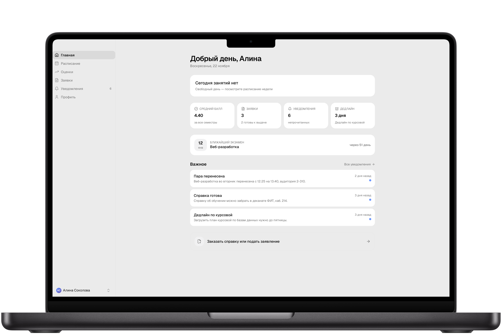
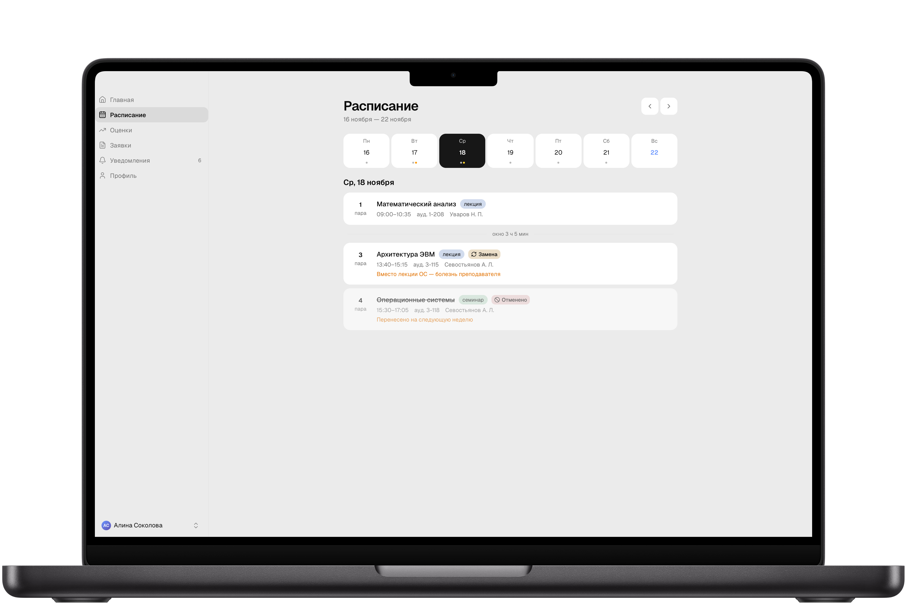
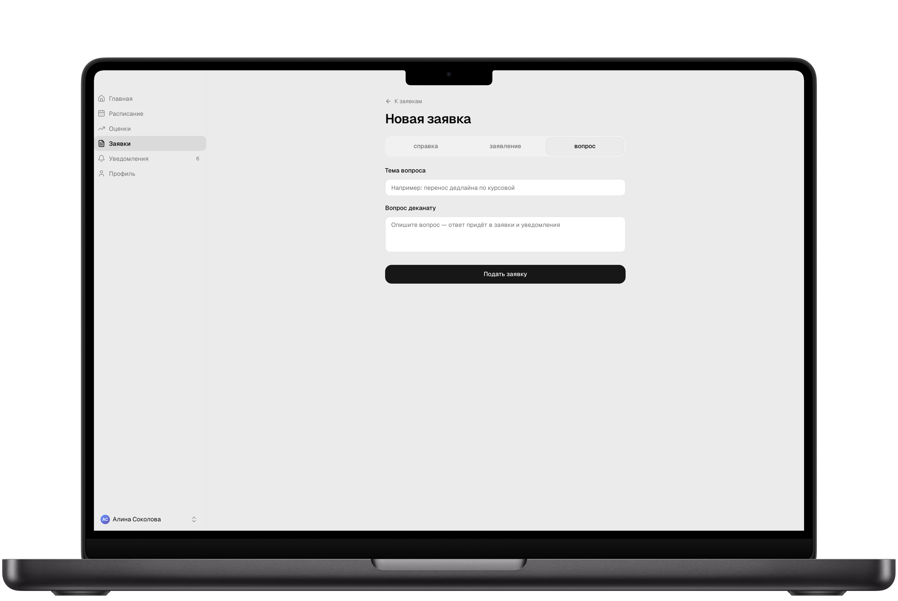
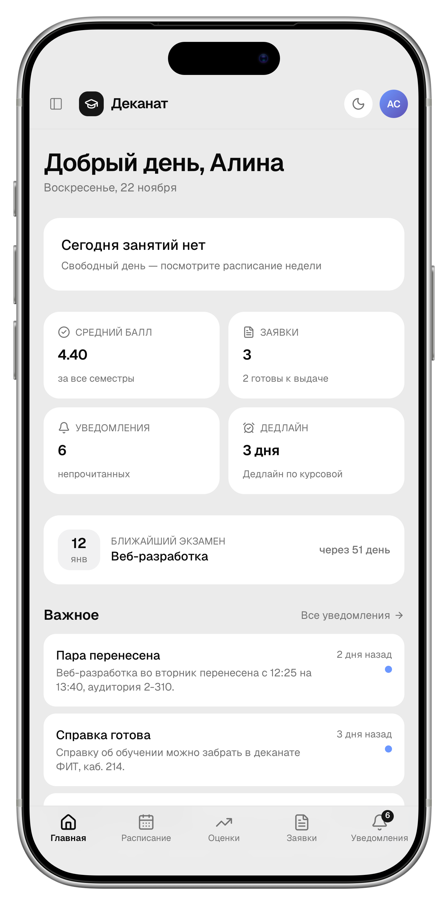

Студент открывает один кабинет вместо расписания в файле, оценок в ведомости и объявлений в чате. Здесь же можно заказать справку и посмотреть ответ деканата.
Для проверки войдите как ivanova или petrov. Пароль для обоих: dekanat2026. Все данные вымышлены.




В кабинетах НГУ и МИСИС посмотрели, как студенты находят учебные данные и заказывают справки. В ClassPass посмотрели, как выбирать день, а в Wise, как фильтровать уведомления.
Что есть в студенческих кабинетах, Как устроены экраны
Сначала видео собирали из отдельных клипов: после входа на мгновение возвращалась форма. Перезаписали демонстрацию одним дублем: открываем разделы через меню слева.
Вместо паролей храним хеши с индивидуальной солью. После входа сервер устанавливает cookie с флагом HttpOnly, поэтому скрипты страницы её не читают. Сервер берёт номер студента из сессии, а не из запроса. Локально используем SQLite, на сайте Cloudflare D1.
Devin помог написать код и проверить экраны. Отдельно попросили Codex написать тесты, например «Write comprehensive unit tests for lib/format.ts». Тесты проверяют форматирование дат, времени и словоформ: lib/format.test.ts.